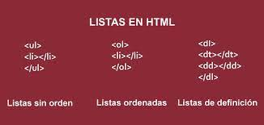
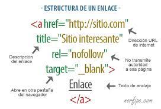

Al interior de este sitio web se encontrara información relacionada
con las etiquetas semanticas, listas y enlaces, desde los datos basicos
como las definiciones y su correcta forma de ser usada, hasta las formas
mas complejas de su uso y los errores mas comunes en su sintaxis.
ETIQUETAS SEMANTICAS
Las etiquetas semánticas ayudan a definir la estructura del documento y permitenque las páginas web sean mejor indexadas por los buscadores. Una etiqueta se califica
como semántica si tiene que ver el significado, es decir, si nos informa sobre lo que trata
su contenido. Por ejemplo, la etiqueta SECTION nos dice que contiene una sección o capítulo dentro
de la página. Frente a las etiquetas semánticas tenemos otros tipos de etiquetas como las que afectan
al formato, como UL, a multimedia, como VIDEO, etc.
Antes de la existencia de las etiquetas semánticas, el contenido se estructuraba con etiquetas DIV
que no aportaban ninguna información sobre el tema que trataban, salvo que se añadiese aprovechando el valor
dado a la propiedad ID, o a la propiedad CLASS para hacer referencia a su contenido.

LISTAS
Las listas en HTML nos permite crear conjuntos de elementos en forma de lista dentro de una página,todos los cuales irán precedidos, generalmente, por un guión o número. Los tipos de listas en HTML
son los siguientes:
Listas ordenadas
Las listas en HTML ordenadas son aquellas que nos muestran los elementos de la lista en orden.
Para representar el orden tendremos los elementos numerados. Es decir, cada uno de los elementos irá
precedido de un número o letra que establezca su orden.
Listas desordenadas
Las listas desordenadas en HTML nos sirven para mostrar los elementos sin ningún tipo de orden,
simplemente precedidos por una viñeta que puede ser un punto, un cuadrado.
Listas de definiciones
Las listas en HTML de definiciones en HTML nos sirven para montar listas en las que tenemos la estructura
valor y definición. Suelen ser listas para definir términos, como si fuese un diccionario, si bien pueden ser
cualquier par valor-definición.

ENLACES
En el HTML los enlaces se marcan con la etiqueta y el atributo principal es href="" donde se escribela ubicación del archivo de destino que puede estar en la misma carpeta que el archivo que lo está llamando,
en otra carpeta del mismo sitio o en otro sitio web.

REFERENCIAS
Aula click/Etiquetas semanticas/2015/Tomado de: https://www.aulaclic.es/articulos/html5-semantica_1.html#:~:text=Las%20etiquetas%20sem%C3%A1nticas%20ayudan%20a,lo%20que%20trata%20su%20contenido.Manual web/Listas HTML/2021/Tomado de: https://www.aulaclic.es/articulos/html5-semantica_1.html#:~:text=Las%20etiquetas%20sem%C3%A1nticas%20ayudan%20a,lo%20que%20trata%20su%20contenido.
Laura Chuburu/Enlaces/2020/Tomado de: https://www.laurachuburu.com.ar/tutoriales/enlaces-html.php#:~:text=En%20el%20HTML%20los%20enlaces,o%20en%20otro%20sitio%20web.